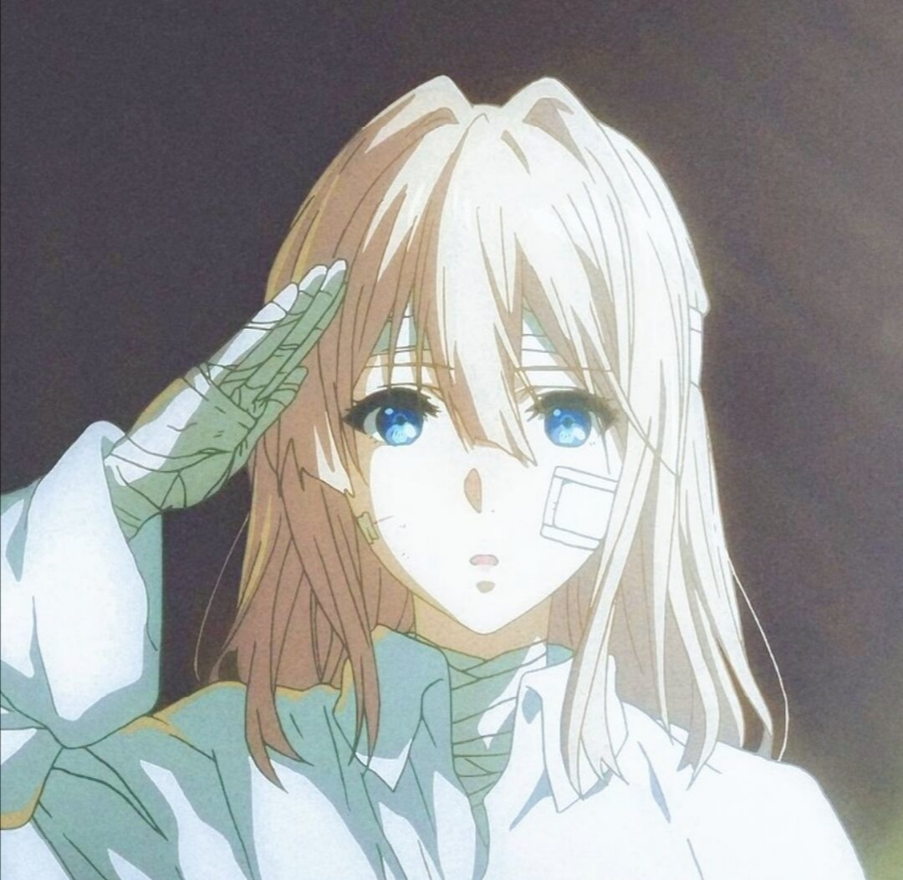

Violet119的主页
个人简介：本人目前是就读于上海某大学计算机专业的本科生，学过一段时间的算法竞赛，但到现在为止也只是一个蒟蒻，也卷不过那些巨佬，也不想花费太多时间在算法竞赛上，只是平时当作兴趣爱好随便做做题。后续想把重心转移到网站的制作和项目的开发上，学习一些实用性技能。同时本人在平时生活中比较喜欢健身，计划准备用表记录健身日期，也比较喜欢摄影会挑选一些照片放在网站上。本人平时喜欢玩点游戏，玩的比较杂，涉猎比较广，FPS玩的多一点。曾经算是二次元，但是现在已经脱离了，只是偶尔看些比较出名的动漫，几乎没有高强度追番了。最喜欢的角色还是薇尔莉特，不仅因为角色本身，也有个人的一些原因。